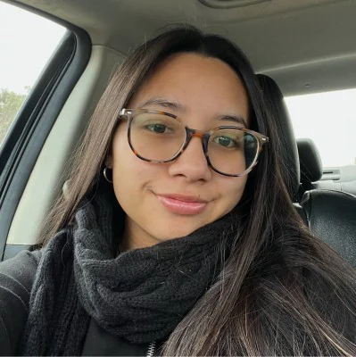
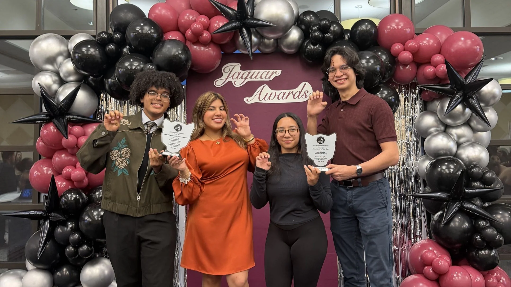

Web Development Team
Developed interactive web applications and tools for the university. As well as internal applications for the web development team using PHP, JavaScript, MySQL, HTML, CSS, and more.
View my resume
I'm a computer science student at Texas A&M University-San Antonio and a student worker on the university's web development team.
Experience
Developed interactive web applications and tools for the university. As well as internal applications for the web development team using PHP, JavaScript, MySQL, HTML, CSS, and more.
View my resumeAn internal suggestion workflow for our Web Services team's Web Dev Portal, with input validation and database-backed submissions.
A tool that lets faculty crop their profile photos to a consistent 1:1 ratio for university department pages.
Community & recognition
At our booth's human slot machine, participants tried their luck for a chance to win a free item from the menu.
Volunteered and hosted talks at K-12 schools across San Antonio and ZECLA.



Sharing what I'm learning